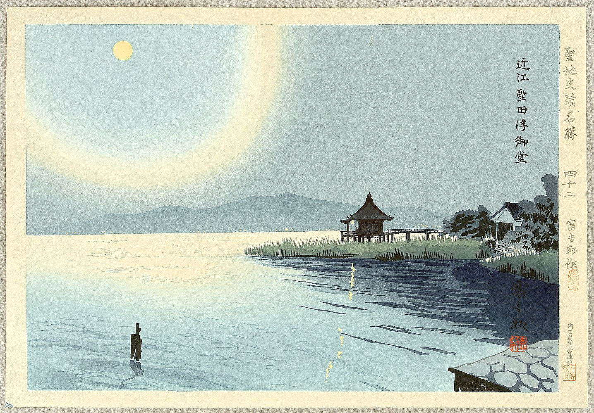
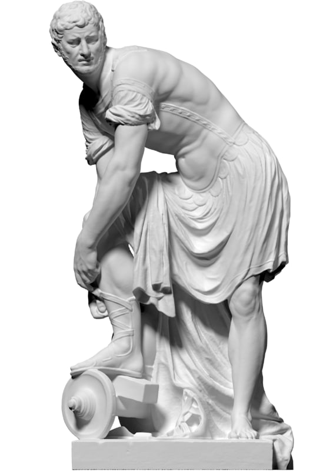
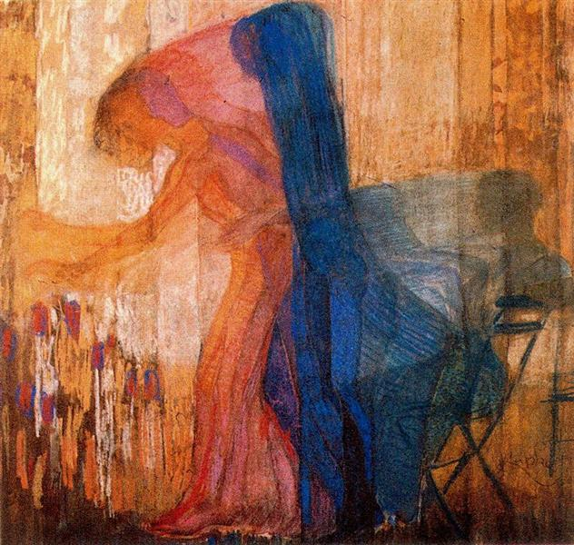
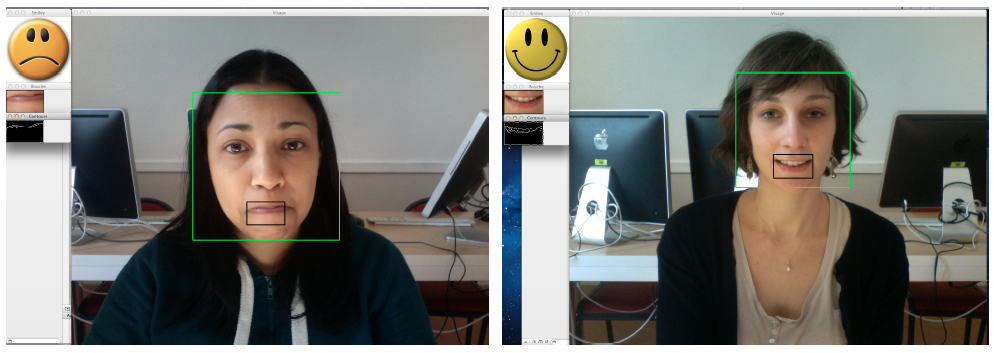
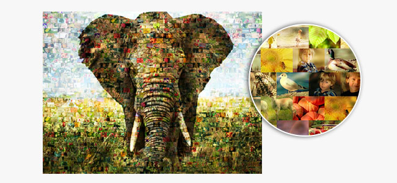
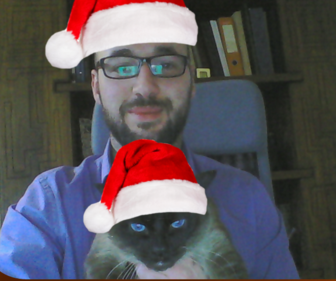
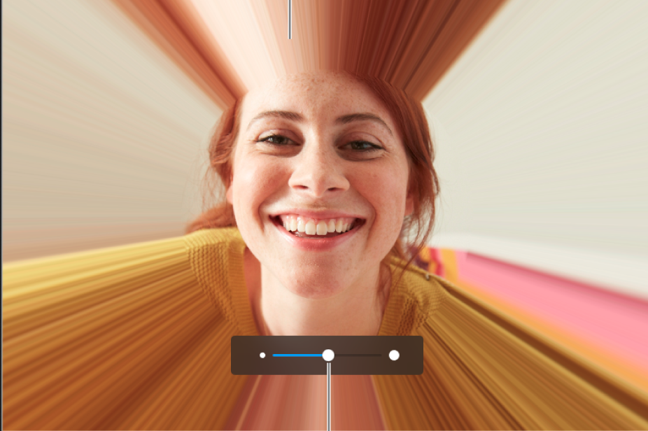
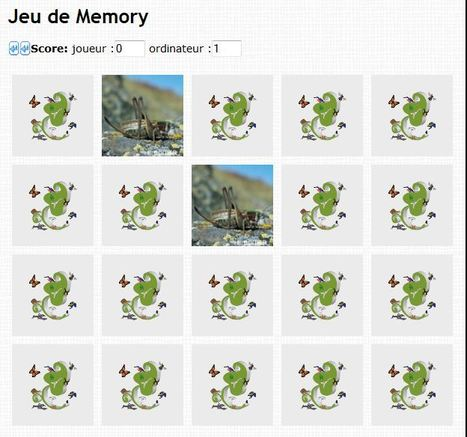
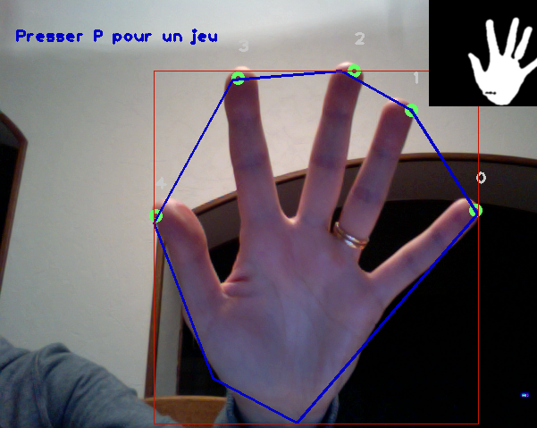
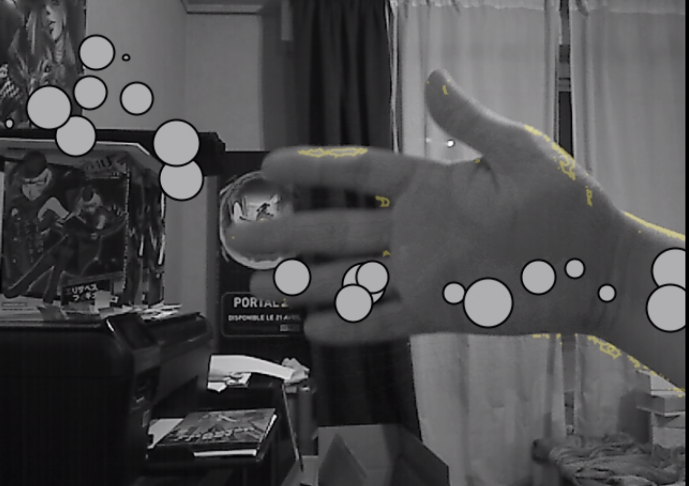

Dessin sur des modèles 3D de statues grecques
Ce projet découle d'une idée soumise par le studio Theoriz. L'objectif est de créer un dialogue entre les collections du musée des moulages (statues grecques) et la
création contemporaine de la BHN par le prisme du "japonisme". L'idée est de projeter des estampes japonaises, par nature graphiques et colorées, sur ces sculptures.
Avant d'effectuer la projection, il est nécessaire de déformer l'image projetée afin qu'elle s'adapte à la forme de la statue. Ce processus s'appelle le mapping vidéo (
Wikipedia
).
Vous disposez d'une banque d'images et de modèles 3D (
ici
). Votre objectif est de déformer les images afin qu'elles s'adaptent à la forme des modèles 3D sur l'écran de l'ordinateur. Par exemple, un algorithme de mapping simple consiste à faire correspondre les boîtes englobantes de l'image et du modèle 3D.


Projection d'images sur des statues grecques
Ce projet découle d'une idée soumise par le studio Theoriz (cf. projet 1).
L'objectif de ce projet est de projeter une image sur un objet mouvant. Cela implique d'utiliser l'information donnée par une caméra avant de projeter l'image avec le vidéoprojecteur : on détecte la position de l'objet dans l'espace, afin de projeter l'image à cette position.
Matériel fourni :
vidéoprojecteur.
Impression du mouvement
L'objectif de ce projet est de fournir une représentation abstraite du mouvement dans une vidéo. Le lien entre abstraction et mouvement est notamment le fruit de l'oeuvre de Frantisek Kupka (1871-1957), qui croise la simplification géométrique du sujet et des couleurs sensorielles, produisant
ainsi des formes graphiques représentant le mouvement.
Ce sujet est ouvert du point de vue du parti-pris artistique. Une idée pourrait être de représenter toute partie mouvante de l'image par des polygones dont la couleur est la couleur moyenne des pixels dans le polygone.

Reconnaissance d'expressions (heureux/triste)
L'objectif de ce projet est la reconnaissance des expressions de joie et de tristesse dans une vidéo (webcam, ou court-métrage). Vous devrez identifier les caractéristiques dans l'image qui permettent de différencier ces deux émotions.

Reconnaissance d'expressions (calme/en colère)
L'objectif de ce projet est la reconnaissance des expressions de calme
et de colère dans une vidéo (webcam, ou court-métrage). Vous devrez identifier les caractéristiques dans l'image qui
permettent de différencier ces deux émotions.
Dessin de la trajectoire d'un objet en mouvement
On souhaite conserver un historique de la position d'un objet mouvant au cours du temps. L'objectif est, dans un premier temps, de dessiner la trajectoire de l'objet, en utilisant un mode de représentation pertinent. Dans un second temps, il serait intéressant de prédire la trajectoire (voir, par exemple,
Wikipedia
).

Mosaïque d'images
La photomosaïque consiste à produire une une image constituée par la juxtaposition d'un grand nombre d'images beaucoup plus petites, choisies pour leur couleur moyenne
adéquate. Ainsi, vue à une distance normale, on reconnaît l'image de
départ, mais en s'approchant, on peut distinguer les centaines, voire
les milliers de photos qui la composent (
Wikipedia
). L'objectif est, dans un premier temps, d'implémenter cet effet à partir d'une image source et d'une banque d'images qui va constituer la photomosaïque. Dans un second temps, il vous faudra réfléchir à la transposition de cet algorithme à un flux vidéo (webcam).

Incrustation d'images
Ce
projet a pour objectif l'incrustation d'images sur un visage (exemples :
chapeau, barbe). Un menu interactif permettra de sélectionner l'image
souhaitée. Vous pourrez générer vos propres images d'incrustation à
partir du logiciel de votre choix (Illustrator, Inkscape...).

Filtres déformants
Ce projet a pour objectif l'implémentation de filtres déformants sur un visage, à la façon de logiciels tels que Photobooth sur MacOSX. Par exemple, vous pourrez implémenter des effets de rétrécissement ou d'élargissement du visage. Un menu interactif permettra de sélectionner le type filtre à appliquer.
Propagation d'ondes
L'objectif de ce projet est de simuler l'effet d'une couche d'eau mince sur l'écran de l'ordinateur. Ainsi, lorsque l'utilisateur interagit avec l'écran (avec le bout de ses doigts, par exemple), une onde se propage, et rebondit sur les bords de l'écran.
Peinture interactive
Deux sujets au choix :
- Peindre avec ses doigts sur l'écran de l'ordinateur. Un menu interactif pourra être proposé afin de changer la couleur et l'épaisseur du trait, le style du dessin...
- Interagir avec une oeuvre de manière à ce qu'elle "réponde" à l'interaction : ajout d'éléments à l'écran (formes, animations...)
Vidéo
Jeu interactif : Memory pour la botanique
Ce projet est proposé par des botanistes en collaboration avec le laboratoire LIRIS. Le Memory est un jeu se composant de paires de cartes portant des illustrations identiques. L'ensemble des cartes est mélangé, puis étalé face contre table. À son tour, chaque joueur retourne deux cartes de son choix. S'il découvre deux cartes identiques, il les ramasse et les conserve, ce qui lui permet de rejouer. Si les cartes ne sont pas identiques, il les retourne faces cachées à leur emplacement de départ. Le jeu se termine quand toutes les paires de cartes ont été découvertes et ramassées. Le gagnant est le joueur qui possède le plus de paires (
Wikipedia
).
L'objectif du projet est ici didactique : il s'agit de faire apprendre les plantes à un large public. Le jeu est interactif : les cartes sont affichées sur l'écran de l'ordinateur, et l'utilisateur peut les retourner en faisant un geste particulier (à déterminer par votre binôme).

Jeu interactif : Association fleurs/feuille pour la botanique
Ce projet est proposé par des botanistes en collaboration avec le laboratoire LIRIS. L'objectif du projet est ici didactique : il s'agit de faire apprendre les plantes à un large public. Le jeu consiste à associer les images des différents organes d'une plante
(fleur, fruit, feuille, bourgeon, écorce, forme générale) qui correspondent à la même plante. L'utilisateur doit pouvoir interagir avec les images pour les associer, en utilisant une interface adaptée.
Jeu interactif : Shifumi
Le Shifumi (ou Pierre-Papier-Ciseaux) est un jeu opposant deux joueurs. De façon générale, la
pierre
bat les
ciseaux
, les
ciseaux
battent la
feuille
, la
feuille
bat la
pierre
. Les joueurs effectuent le geste correspondant au symbole avec leur main (
Wikipedia
).
L'objectif du projet est de d'implémenter le jeu du Shifumi par lecture du flux vidéo de la webcam. Cela implique la reconnaissance automatique des gestes de la main.

Jeu interactif : Récolte de flocons de neige
Ce jeu consiste à récupérer des flocons qui tombent avant qu'ils n'atteignent le bas de l'écran. La récolte est faite avec un récipient que l'utilisateur porte dans ses mains.
L'objectif de ce projet est de bâtir l'interaction entre des images (les flocons) et un élément à identifier dans le flux vidéo de la webcam (le récipient).
Jeu interactif : Bulles et courants d'air
Ce jeu consiste à simuler le brassage de l'air. Des bulles flottant à l'écran sont déplacées lorsque l'utilisateur bouge ses mains. Les bulles doivent suivre le déplacement des mains : elles remontent lorsque les mains se déplacent du bas vers le haut, et descendent lorsque les mains se déplacent du haut vers le bas.
L'objectif de ce projet est de bâtir l'interaction entre des images (les bulles) et les mains à partir du flux vidéo de la webcam.
